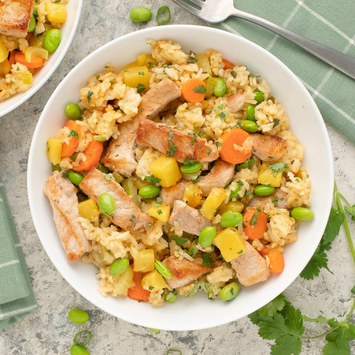

Pineapple Pork Fried Rice with Carrot, Edamame, Celery & Cilantro

Total Time
35 min
Nutrition (per serving)
700.9 kcalCalories
43.2 gProtein
66 gCarbs
31 gFat
Full nutrition table
| Calories | 700.9 kcal |
| Total fat | 31 g |
| Saturated fat | 14.8 g |
| Trans fat | 0.1 g |
| Cholesterol | 85.6 mg |
| Sodium | 194 mg |
| Carbohydrates | 66 g |
| Fiber | 7.4 g |
| Sugars | 15.3 g |
| Protein | 43.2 g |
| Potassium | 1381.5 mg |
| Calcium | 139.9 mg |
| Iron | 5.3 mg |
| Vitamin A | 642.6 IU |
| Vitamin C | 72.1 mg |
| Vitamin D | 16 IU |
Cookware
Ingredients
- 2 mediumcarrots
- 4 stickscelery
- 1 small bunchcilantro
- 1 cupedamame, shelled
- 4 clovesgarlic
- 2 (1 inch) piecesginger root
- 1 small bunchgreen onions (scallions)
- 1 cupjasmine rice
- 1 smallpineapple
- 4pork chops, boneless
- black pepper
- salt
- soy sauce
- virgin coconut oil
Steps
- Using a strainer or colander, rinse the rice under cold, running water, then drain and transfer to a medium saucepan. Add water and bring the mixture to a boil over high heat.1 cup jasmine rice
2 cup water - Once the liquid comes to a boil, stir the mixture, cover the saucepan, and reduce heat to low. Cook rice until liquid is fully absorbed, 15-18 minutes. Once done, remove rice from the heat and let it stand, still covered, for 5 minutes.
- Meanwhile, wash and dry the fresh produce.1 small pineapple
1 small bunch green onions (scallions)
4 sticks celery
2 medium carrots
2 (1 inch) pieces ginger root
1 small bunch cilantro - Cut off skin from pineapple; quarter, core, and medium dice. Place in a medium bowl.
- Trim and slice green onion and celery crosswise into ¼-inch pieces; add both to the bowl with the pineapple.
- Peel, trim, and slice carrots crosswise into ¼-inch thick rounds; add to the bowl.
- Peel and mince ginger and garlic; add to the bowl and set aside.4 cloves garlic
- Preheat a large skillet over medium-high heat.
- While the skillet heats up, pat pork chops dry with paper towels and place on the cutting board; thinly slice crosswise into bite-sized strips, then season with salt and pepper.4 pork chops, boneless
½ tsp salt
½ tsp black pepper - Once the skillet is hot, add oil and swirl to coat the bottom; add pork and stir-fry until browned and cooked through, 3-4 minutes. Transfer to a plate.4 tsp virgin coconut oil
- When the pork is done, return the skillet to medium-high heat, add more oil, and swirl to coat the bottom. Add pineapple, veggies, and edamame; stir-fry until veggies are fork-tender, 4-5 minutes.4 tsp virgin coconut oil
1 cup edamame, shelled - Meanwhile, using a clean cutting board, shave cilantro leaves off the stems; discard stems and mince the leaves.
- When the veggies are done, add cooked rice, pork (with any accumulated juices), and soy sauce to the skillet; continue to cook, stirring constantly, until combined and heated through, 1-2 minutes more. Remove from heat, add cilantro, and stir to combine.⅓ cup soy sauce
- To serve, divide fried rice between plates or bowls. Enjoy!